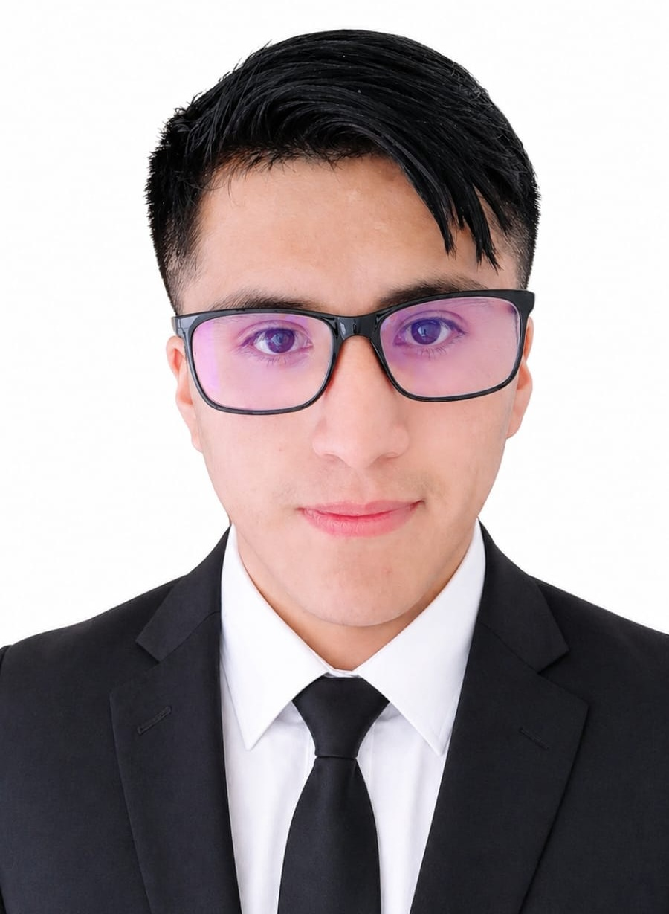

Luis Antonio
Estudiante de Ingeniería de Software
Sobre mí
Soy estudiante de Ingeniería de Software con interés en el desarrollo web, creación de sistemas y soluciones digitales. Me gusta construir páginas modernas, ordenadas y funcionales, aplicando buenas prácticas de diseño, programación y trabajo colaborativo con GitHub.
Perfil profesional
Me enfoco en desarrollar sitios web responsivos, sistemas básicos de gestión y proyectos digitales que ayuden a personas o negocios a mejorar su presencia en internet. Busco seguir aprendiendo y ganar experiencia creando soluciones reales.
Habilidades técnicas
Proyectos
Sitio web institucional
Desarrollo de páginas web con secciones informativas, diseño responsivo y navegación clara para usuarios.
Sistema de login
Creación de autenticación con roles de usuario usando PHP, MySQL y PDO.
Fortalezas
- Responsabilidad en el trabajo.
- Interés por aprender nuevas tecnologías.
- Creatividad para diseños modernos.
- Capacidad para resolver problemas.
Contacto
Puedes contactarme para proyectos web, colaboración académica o desarrollo de páginas modernas.